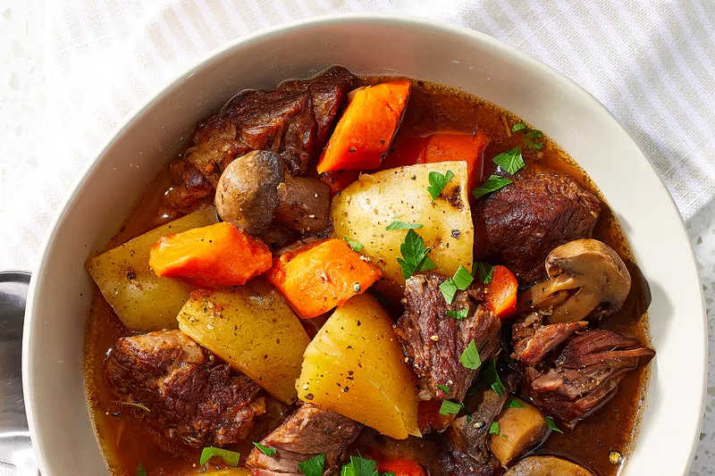

Instant Pot Beef Stew

Descrpiton
A stew is a combination of solid food ingredients that have been cooked in liquid and served in the resultant gravy. Ingredients can include any combination of vegetables and may include meat, especially tougher meats suitable for slow-cooking, such as beef, pork, venison, rabbit, lamb, poultry, sausages, and seafood
Instant Pot Beef Stew ingredients
- 1 tablespoon butter
- 1 pound beef chuck, cut into 1-inch cubes
- 4 Yukon Gold potatoes, cubed
- 1 ½ cups mushrooms, halved
- 1 onion, cut into 6 wedges
- 2 carrots, cut into 1/2-inch thick slices
Steps
- Gather all ingredients.
- Turn on a multi-functional pressure cooker (such as Instant Pot) and select the Sauté function. Melt butter in the pot. Cook beef chuck cubes in batches until browned on all sides, about 5 minutes per batch.
- Return all beef chuck cubes to the pot. Add potatoes, mushrooms, onion, carrots, and garlic; cover with beef broth. Stir in Worcestershire sauce, tomato paste, salt, pepper, and rosemary.
- Close and lock the lid. Select Meat/Stew function, according to the manufacturer's instructions; set the timer for 35 minutes. Allow 10 to 15 minutes for pressure to build.
- Release pressure using the natural-release method, according to the manufacturer's instructions, 10 to 40 minutes. Unlock and remove the lid..
- Let the lasagna rest before serving.